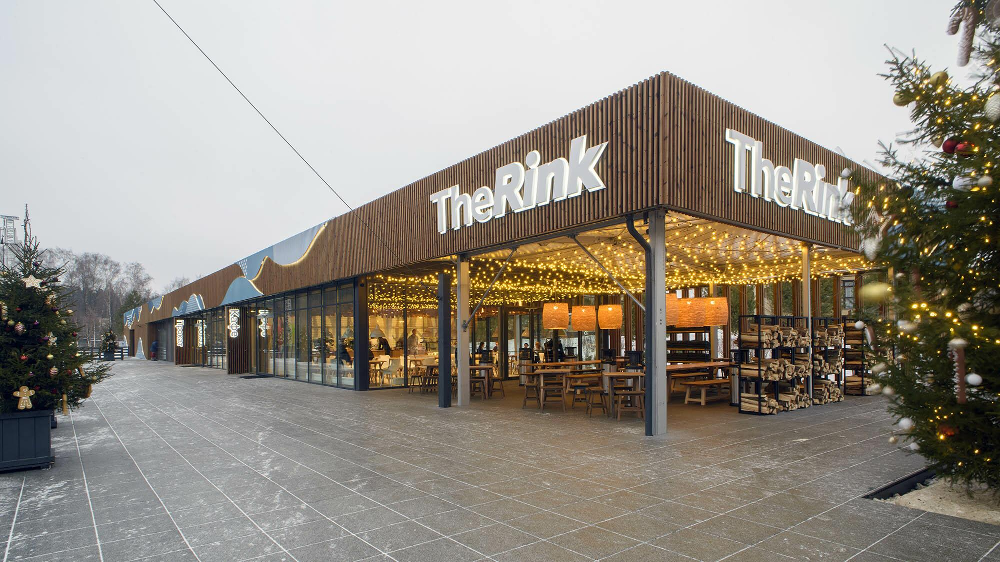
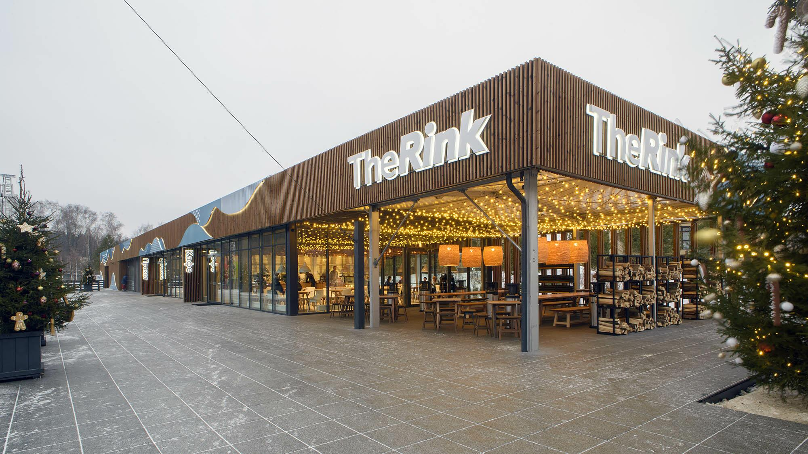

The Rink в Сколково: Гастрономия и природа на фоне ледового шоу В самом сердце инновационного центра Сколково, окруженное живописными пейзажами, находится одно из самых необычных и популярных мест Подмосковья — The Rink. Это не просто каток и не просто ресторан, а уникальное пространство, где кулинарные удовольствия встречаются с красотой природы и динамикой спорта. Вкус, ради которого стоит приехать Главный секрет популярности The Rink — это его вкусная и разнообразная еда. Вас ждет настоящая гастрономическая география: от самых аутентичных итальянских паст и пицц в ресторане Magazzino Maestro до сочных бургеров и авторских блюд европейской кухни. Здесь готовят из свежайших продуктов, внимательно следят за деталями и предлагают богатую винную карту. Идеальное место для того, чтобы провести выходной за сытным бранчем или романтическим ужином. Уникальная атмосфера и виды Кафе и рестораны комплекса расположены вокруг огромной ледовой арены. Благодаря панорамному остеклению вы наслаждаетесь едой и общением, наблюдая за захватывающим действом на льду — будь то тренировки юных хоккеистов или веселые катания семей с детьми. Это живое, динамичное и вдохновляющее зрелище, которое создает абсолютно неповторимую атмосферу. Но красота здесь не только рукотворная. The Rink органично вписан в ландшафт Сколково, известный своей современной архитектурой и ухоженной природой. Летом можно расположиться на просторной террасе, любуясь зелеными холмами и современными зданиями, а зимой — наблюдать за снежными пейзажами через огромные окна. Идеальное место для отдыха The Rink в Сколково — это место, где можно провести целый день с семьей или друзьями. Здесь все предусмотрено для комфорта: Для гурманов: Вкусная кухня и уютная атмосфера. Для семей с детьми: Яркие впечатления от катания на коньках и просторное помещение. Для романтических встреч: Стильный интерьер и красивые виды создают идеальную обстановку. Для любителей спорта и активного образа жизни: Профессиональный лед и энергия движения. В двух словах: Фишка: Рестораны с панорамным видом на ледовую арену в окружении природы. Еда: Высокая гастрономия, европейская и итальянская кухня, отличные бранчи. Атмосфера: Современная, динамичная, семейная, европейская. Природа: Зеленые зоны, террасы и виды на архитектурный ландшафт Сколково. The Rink в Сколково — это место, где создают прекрасные воспоминания, объединяя вкусную еду, красоту вокруг и радость движения
Кафе The Rink Skolkovo
 

Выставка FUTURONE на ВДНХ
Futurione на ВДНХ: Погружение в будущее, где технологии встречаются с искусством На главной выставке страны происходит настоящее чудо — в павильоне «Космос» поселился мир завтрашнего дня. Futurione — это не просто выставка, а масштабное иммерсивное шоу, где стираются границы между цифровым и физическим, а каждый посетитель становится частью удивительного действа. Что это такое? Futurione — это мультимедийная феерия, в которой новейшие технологии рассказывают истории о будущем человечества. Огромные проекции, генеративная графика, кинетические инсталляции и объемный звук создают целостный организм, живущий по своим законам. Это место, где можно не только смотреть, но и чувствовать будущее кожей. Почему это интересное место? Полное погружение: Вы не просто ходите и разглядываете экспонаты. Вы оказываетесь внутри цифрового космоса. Окружающие вас стены, пол и потолок оживают, трансформируя пространство в бесконечный океан света, звука и движения. Это незабываемый опыт, который переворачивает представление о возможном. Диалог с вселенной: Одна из ключевых тем выставки — освоение космоса и место человека во Вселенной. Технологии здесь становятся языком, на котором говорят о глобальном. Это заставляет не только восхищаться, но и задуматься о будущем науки, экологии и нашего вида. Идеальные фото и видео: Каждый уголок Futurione — это готовый кадр для социальных сетей. Фантастические пейзажи, рождающиеся в реальном времени, переливы света и абстрактные формы создают уникальный контент, который невозможно повторить. Атмосфера открытий: Выставка интерактивна. Некоторые инсталляции реагируют на движение, меняя свой рисунок и звучание. Это создает ощущение диалога с цифровым разумом и собственной причастности к созданию этого визуального спектакля. Итог: Futurione — это больше, чем развлечение. Это мощный эстетический и интеллектуальный опыт. Она доказывает, что технологии — это не только про функциональность, но и про новое искусство, способное вызывать сильные эмоции. Приходите сюда, чтобы потерять связь с реальностью на пару часов и увидеть, каким прекрасным может быть наше будущее. В двух словах: Атмосфера: Футуристическая, завораживающая, иммерсивная. Фишка: Полное погружение в цифровой космос через мультимедийные технологии. Для кого: Для всех, кто интересуется технологиями, современным искусством, ищет нестандартные впечатления и идеальные кадры. Эффект: Оставляет ощущение чуда и желание немедленно делиться увиденным. Адрес: ВДНХ, павильон №34 «Космос».